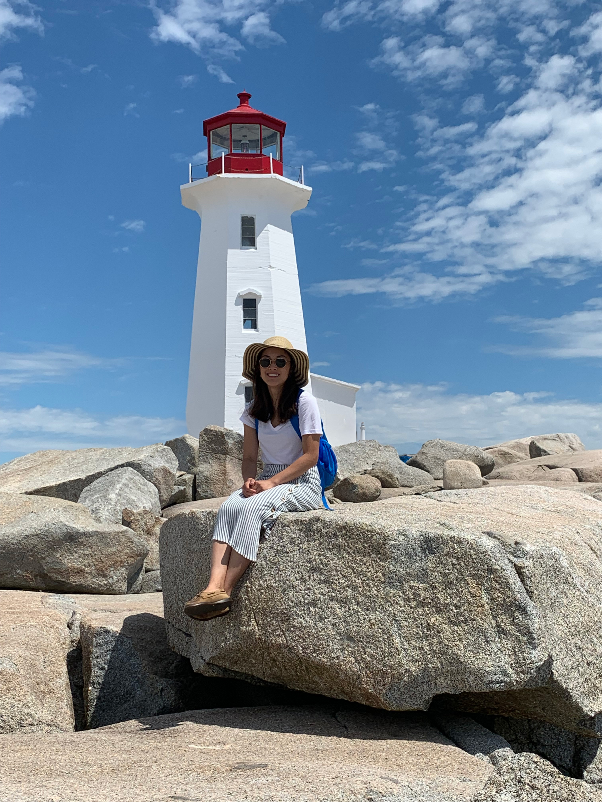

About Me
Hello! I'm Lori, a first year graphic design student at Algonquin College. I have a previous degree in Psychology and bring various research work experience to apply to design.
After working in a research, I realized it was not fulfilling anymore. I wanted to be creative and produce outputs that were accessible and meaningful, rather than write papers that no one would read. Therefore, pursuing graphic design is a new path in my career journey. I am passionate about exploring various art mediums, dancing, theatre, and motivated to connect and learn about others.
"Vulnerability is not winning or losing; it's having the courage to show up and be seen when we have no control over the outcome."
-Brene Brown
My Skills
- Organzied
- Detail-oriented
- Good project management
- Reliable
- Strong communication
- Strong empathy
Graphic Design Courses
- Computer Graphics 2
- Graphic Design 2
- Concept Sketching 2
- Typography 2
- Web Design 1
- Communications for Design